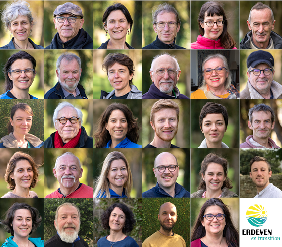

Erdeven en Transition
"Erdeven en transition est une liste sans étiquette regroupant des habitant·e·s d’Erdeven désireux de construire un projet d’inspiration citoyenne, écologique, sociale et solidaire."
Valérie BOURHIS, 54 ans, Professeure des écoles.
Venez échanger avec nous le vendredi 13 mars à 20h30 à la Salle Polyvalente.
